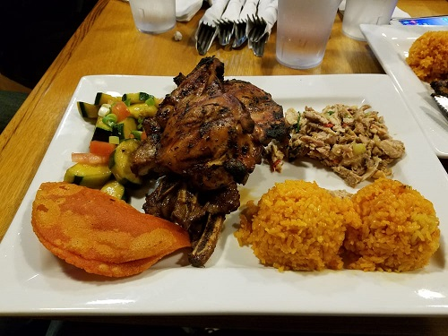
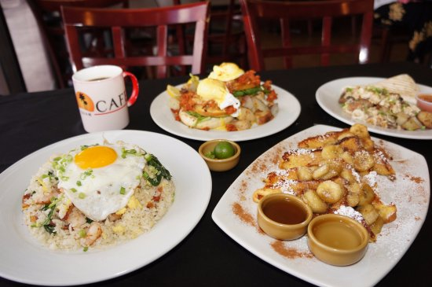
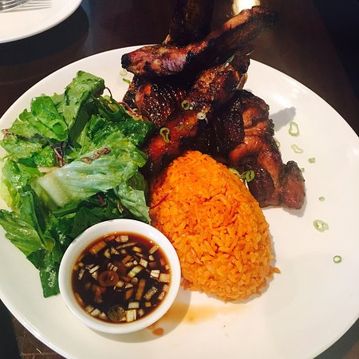
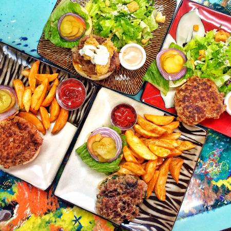
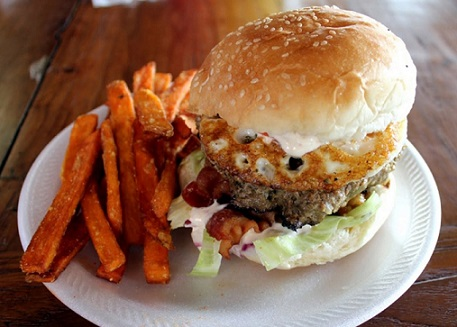
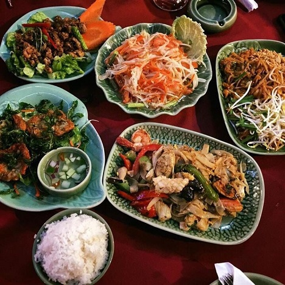
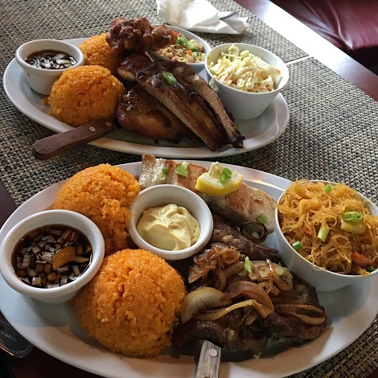
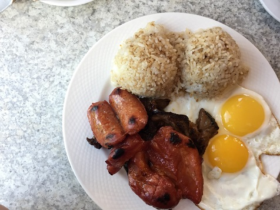
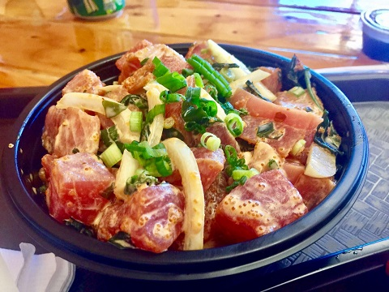

Restaurants in Guam

Food! Guam has an array of great food for you to try. The most classic Chamorro cuisine include barbeque served with the Chamorro-style red rice, chicken kelaguen, empanada, and pickled cucumbers. Here is a list of the most popular local restaurants Guam has to offer. Great price, great food!

Pika's Cafe
- Rating: 4.5/5
- Hours: Mon-Sun 7:30-15:00
- Address: Star Bldg, 888 N S Marine Corps Dr, Tamuning, 96913, Guam
- Phone: +1 671-647-7452
- Link to menu: https://www.facebook.com/pikascafe/

Proa Restaurant
- Rating: 4.1/5
- Hours: Mon-Sun 11:00-23:00
- Address: 429 Pale San Vitores Rd, Tumon, 96913, Guam
- Phone: +1 671-646-7762
- Link to menu: https://www.facebook.com/proaguam/

Mosa's Joint
- Rating: 4.5/5
- Hours: Mon-Sun 11:00-21:00
- Address: 324 West Soledad Avenue, Hagåtña, Guam
- Phone: +1 671-969-2469
- Link to menu: https://www.mosasjointguam.com/

Meskla DOS
- Rating: 4.2/5
- Hours: Mon-Sun 11:00-22:00
- Address: 413 A&B N. Marine Corps Dr., 14A, Tamuning, 96931, Guam
- Phone: +1 671-646-6295
- Link to menu: https://www.yelp.com/biz/meskla-dos-upper-tumon-hag%C3%A5t%C3%B1a

Ban Thai Restaurant
- Rating: 4.0/5
- Hours: Mon-Sun 10:30-14:00, 17:00-22:30
- Address: 971 Pale San Vitores Rd, Tamuning, 96913, Guam
- Phone: +1 671-649-2437
- Link to menu: http://www.banthaiguam.com/

Terry's Local Comfort Food
- Rating: 4.5/5
- Hours: Mon-Sat 11:00-22:00, Sun 10:00-15:00
- Address: 901 Pale San Vitores Road Tamuning GU 96913, 901 Pale San Vitores Rd, Tamuning, Guam
- Phone: +1 671-646-3663
- Link to menu: https://www.facebook.com/terryslocal/

Kracked Egg
- Rating: 4.1/5
- Hours: Mon-Thurs 5:00-20:00, Fri-Sat open 24 hours, Sun 00:00-20:00
- Address: 1051 Pale San Vitores Rd, Tamuning, 96913, Guam
- Phone: +1 671-648-0881
- Link to menu: http://thekrackedegg.com/

Poki-Fry House
- Rating: 4.6/5
- Hours: Mon-Sat 10:30-14:30, 15:30-20:00
- Address: Agana Pool Maite, Guam
- Phone: +1 671-479-7654
- Link to menu: https://www.facebook.com/pokifry/